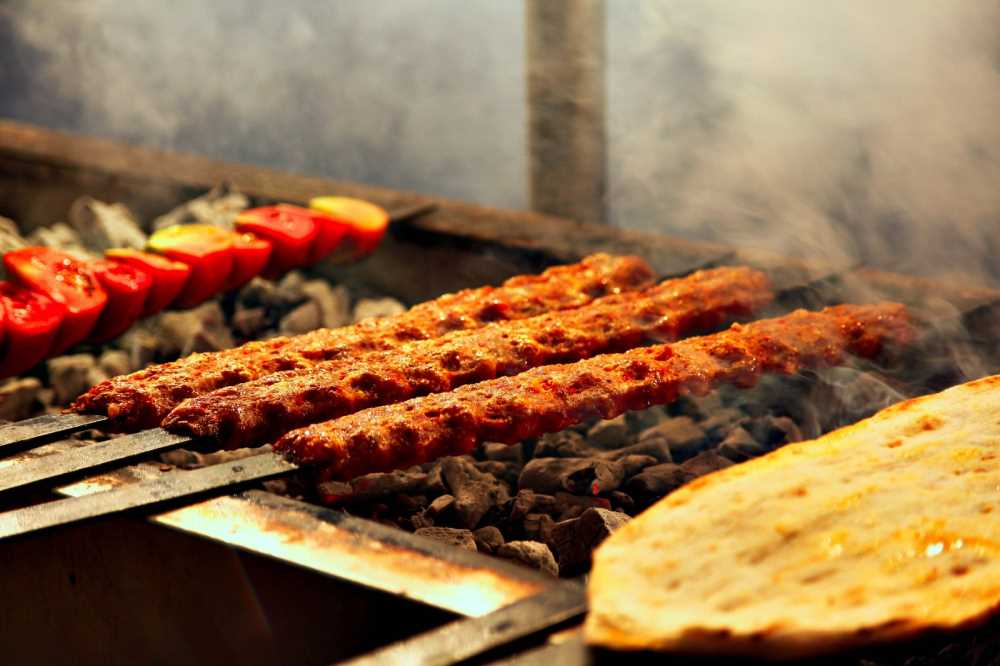

Kebabı en ünlü yemeğidir.
Adana kebabı, Adana'ya özgü, "zırh" adı verilen, satıra benzer bir bıçak ile elde kıyılan parça etten yapılan Türk mutfağında bir kebap veya şiş köfte çeşidi. Adana kebabını diğer kebaplardan ayıran en belirgin özellik kullanılan ettir.Et, doğal ortamda ve kendine has bir floraya sahip bölge yaylalarında yetiştirilmiş erkek koyunlardan elde edilmiş olmalıdır. Üretim tekniği ve ustalık da ürüne önemli ölçüde farklılık katar. Karışım hazırlanırken kullanılan malzemeler kırmızı pul biber, kuyruk yağıdır. Adana kebabının servisi, tamamlayıcı unsurlar olan yeşillik, sumaklı soğan salatası ve salatayla yapılmalıdır.